Un mode d'emploi pour les responsables et co-responsables : écrire ses propres questions, les rassembler en séries, et les offrir à toute l'assemblée.
Ce qu'est une série, et pourquoi elle ne casse rien.
Bible Horizon arrive avec une banque commune de questions, la même pour tout le monde. Ton église peut y ajouter les siennes — celles qui collent à une prédication, à une étude, à un camp. On appelle ça une série.
Le principe à retenir : une série s'ajoute à la banque commune, elle ne la remplace jamais. Au lancement d'une épreuve, chacun choisit avec quoi il joue — « Banque complète », ou l'une de tes séries. Rien de ce que tu écris ne retire quoi que ce soit aux autres.
| Épreuve | Ce que tu écris |
|---|---|
| De qui parle-t-on ? | Un portrait : la réponse, son genre (personnage, lieu ou chose), et cinq indices du plus difficile au plus facile. |
| Qui a dit ? | Une parole, quatre voix possibles, la bonne, et sa référence. |
| Écrit… ou pas ? | Une phrase, et un verdict : elle est dans la Bible, ou elle n'y est pas. |
| Qui, où, quand ? | Une question à quatre réponses, avec sa catégorie et son niveau. Cette épreuve-là se règle un peu différemment — voir la dernière page. |
Le responsable de l'église et les co-responsables qu'il a nommés. Personne d'autre : un simple membre ne voit ni les brouillons, ni les boutons. Le serveur revérifie à chaque enregistrement — même si quelqu'un bricolait l'écran, il n'écrirait rien.
Une série de trois portraits se rédige en une quinzaine de minutes. Rien n'oblige à tout faire d'un coup : une série reste en brouillon, invisible de l'assemblée, aussi longtemps que tu veux.
Une chose à savoir dès maintenant. Ce que ton église publie, elle en répond. Les questions d'une série publiée sont visibles de toute personne à qui un membre partage un code de partie — pas seulement de l'assemblée. Elles portent sur le texte biblique ; Bible Horizon peut retirer celles qui s'en écartent.
Sept gestes, du premier écran à la série jouable.
Onglet Mon église, puis la carte « Les séries de questions de mon église ». Elle n'apparaît que si tu es responsable ou co-responsable.
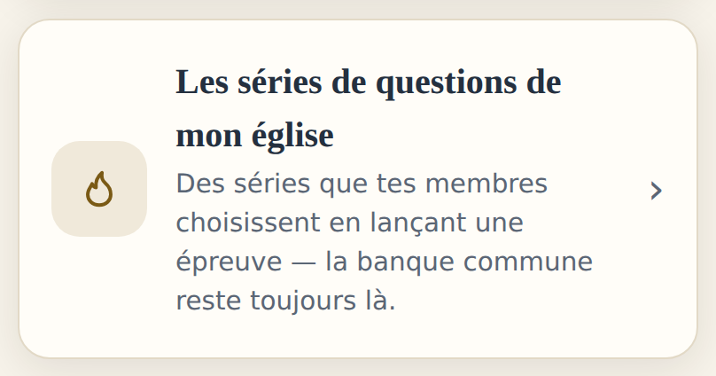
Les quatre pastilles en haut. Chaque épreuve a ses propres séries : celles de « De qui parle-t-on ? » ne se mélangent jamais à celles de « Qui a dit ? ».
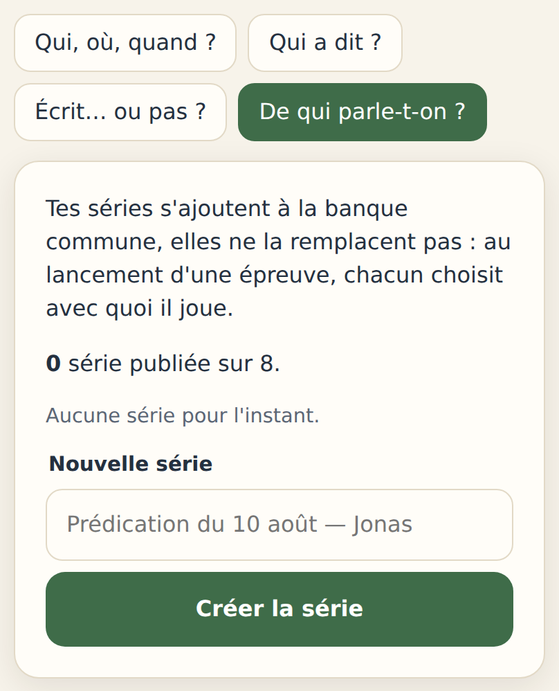
Ici « De qui parle-t-on ? », encore sans aucune série.
Le nom est ce que tes membres verront au lancement de la partie. Sois concret : « Prédication du 10 août — Jonas » parle mieux que « Série n° 2 ». Jusqu'à 80 caractères.
Au clic sur Créer la série, elle s'ouvre aussitôt — et reste en brouillon.
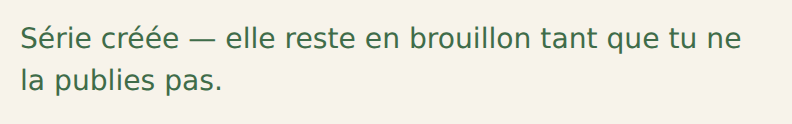
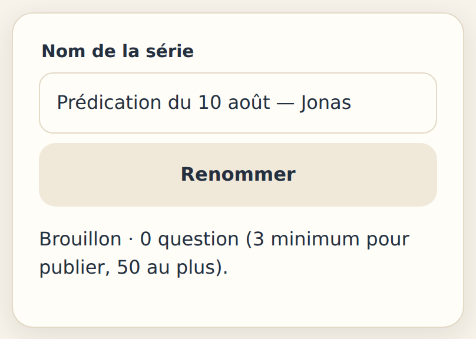
Bouton Nouvelle question en bas de la série. Le formulaire change selon l'épreuve — celui-ci est celui d'un portrait.
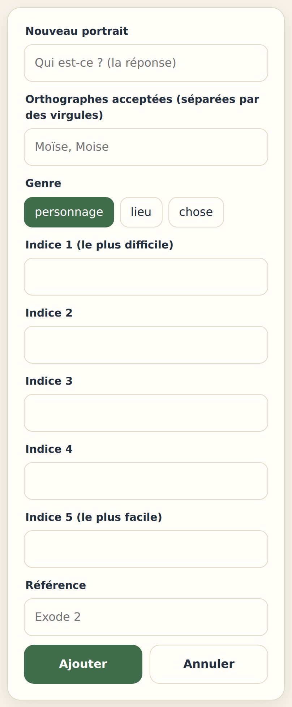
Le formulaire vide.
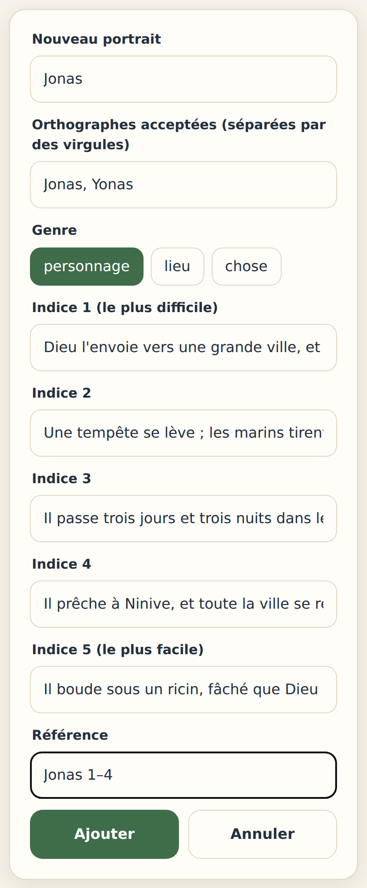
Le même, rempli.
Une série se publie à partir de 3 questions, et en accepte 50 au plus. Tant que tu n'en as pas trois, le bouton Publier reste éteint.
Chaque ligne se relit d'un coup d'œil : la réponse en gras, puis le genre et la référence. Modifier et Supprimer sont là à côté.
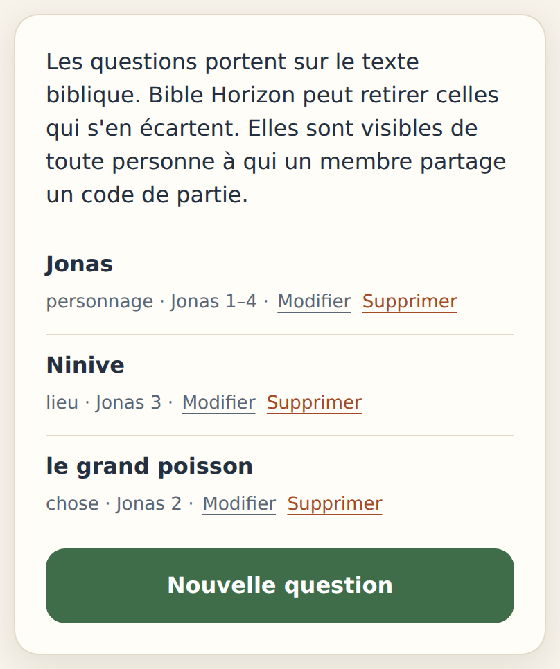
Reviens à ‹ Toutes les séries et clique Publier. C'est le moment où l'assemblée la voit.
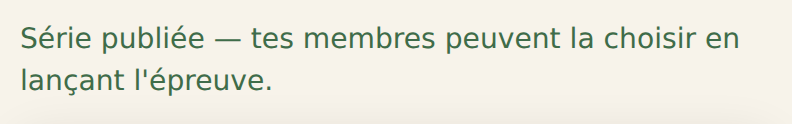
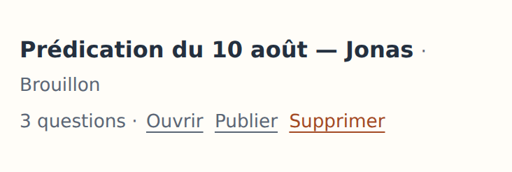
Avant : brouillon, et le bouton Publier.
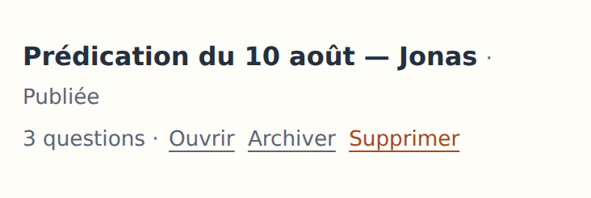
Après : publiée, et le bouton devient Archiver.
Ouvre l'épreuve toi-même : ta série apparaît en pastille, à côté de Banque complète. C'est exactement ce que voient tes membres.
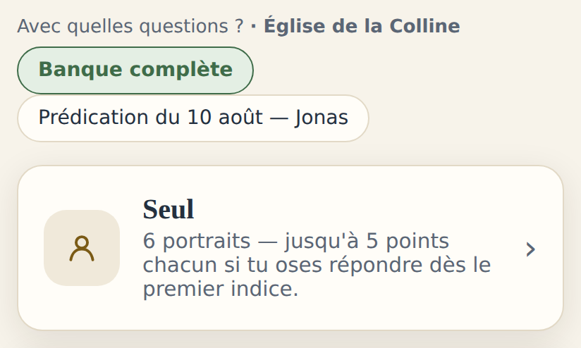
Ce que chaque épreuve attend, et les longueurs à respecter.
| Champ | Ce qu'il faut savoir | Limite |
|---|---|---|
| La réponse | Ce qu'il faut deviner : « Jonas », « Ninive », « l'arche ». | 60 car. |
| Orthographes acceptées | Séparées par des virgules. Écris-y les variantes que tu accepterais à l'oral : Moïse, Moise. Au moins une. | 60 car. ch. |
| Genre | Personnage, lieu ou chose. Il change la phrase de révélation (« Ce lieu est bien… »). Ne l'oublie pas : il reste sur « personnage » par défaut. | — |
| Cinq indices | Exactement cinq, tous remplis. Du plus difficile au plus facile — l'indice 1 doit laisser hésiter, le 5 doit presque donner la réponse. | 240 car. ch. |
| Référence | Obligatoire. « Jonas 1–4 » convient. | 60 car. |
Le jeu récompense l'audace : répondre au premier indice vaut 5 points, au dernier 1 seul. Une série où le premier indice est déjà trop clair n'a plus d'enjeu — c'est le principal défaut des portraits écrits trop vite.
| Champ | Limite |
|---|---|
| La parole | 300 car. |
| Quatre voix | 90 car. ch. |
| La bonne voix | 1 sur 4 |
| Référence (obligatoire) | 60 car. |
| Contexte (facultatif) | 300 car. |
Les quatre voix doivent toutes être plausibles : trois noms au hasard rendent la question inutile. Le contexte s'affiche après la réponse — c'est là qu'on enseigne.
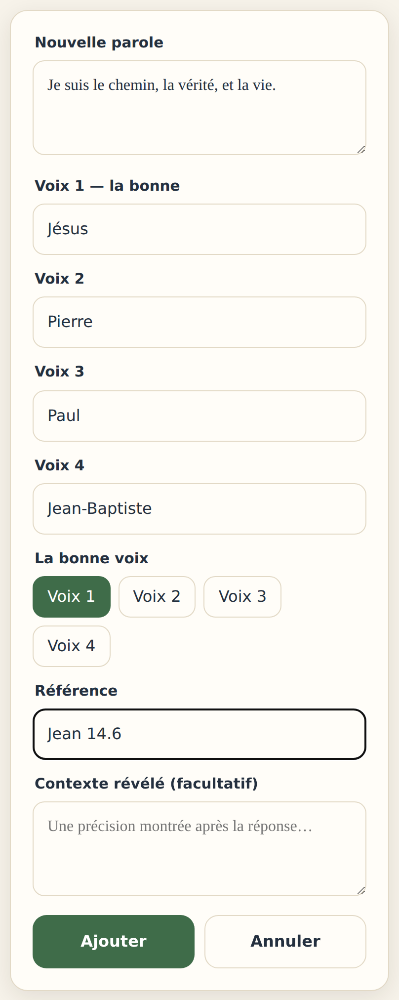
| Champ | Limite |
|---|---|
| La phrase | 300 car. |
| Verdict | écrit / pas écrit |
| Référence | 60 car. |
| Précision (facultatif) | 300 car. |
Si tu réponds « C'est écrit », la référence devient obligatoire : une phrase écrite se prouve. Si elle ne l'est pas, tu peux laisser la référence vide.
La précision est le cœur de cette épreuve : c'est là qu'on explique d'où vient la confusion — « proverbe français, pas verset ; la Bible dit au contraire… ».
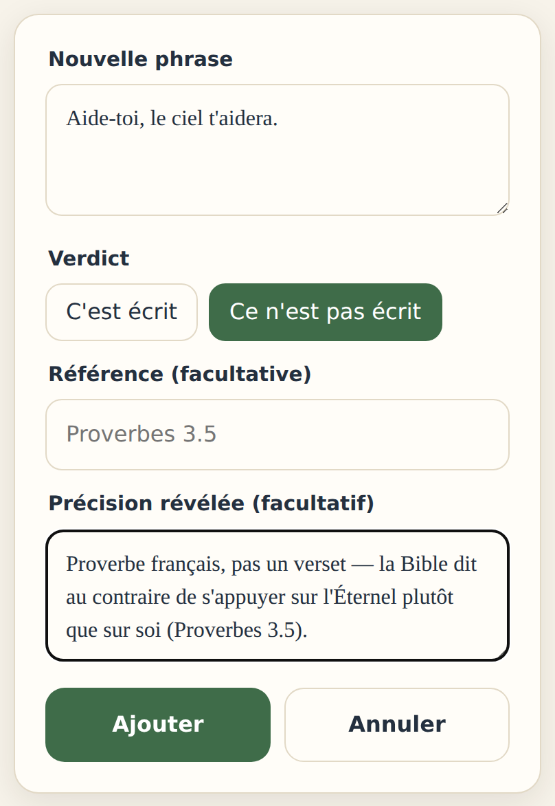
Quand tu cites une parole avec sa référence, Bible Horizon va la chercher dans la Segond 1910. S'il ne l'y trouve pas, il te le dit — sans refuser ton enregistrement :
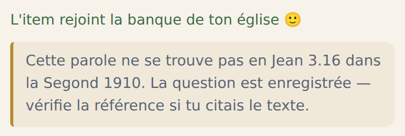
La question est bel et bien enregistrée. L'avertissement invite seulement à revérifier.
C'est un avertissement, pas un jugement : il ne se déclenche pas sur une référence qu'il ne sait pas lire, et il se tait si tu paraphrases sans prétendre citer. Quand il parle, il a généralement raison — c'est presque toujours une référence à corriger.
Brouillon, publiée, archivée — et les plafonds à connaître.
| État | Ce que ça veut dire |
|---|---|
| Brouillon | Invisible de tes membres. Tu écris en plusieurs fois, sur plusieurs jours, sans que personne ne voie le chantier. |
| Publiée | Jouable. Elle apparaît en pastille au lancement de l'épreuve, et compte dans le plafond des séries visibles. |
| Archivée | Rangée, jamais perdue. Archiver libère une place sans rien détruire — le travail d'un bénévole ne se jette pas. |
Quand tu as atteint les 8 séries publiées, archive plutôt que de supprimer. Une série de l'an dernier peut resservir : republier ne coûte qu'un clic.
| Ce qui est compté | Maximum |
|---|---|
| Séries publiées à la fois, par épreuve | 8 |
| Séries au total, tous états confondus, par épreuve | 40 |
| Questions dans une série | 3 minimum · 50 maximum |
| Questions d'une église, toutes épreuves confondues | 600 |
| Nom d'une série | 80 caractères |
Sous les pastilles de choix, au lancement d'une épreuve, chaque joueur dispose d'un lien « Signaler un contenu de cette série ». Le courrier arrive à contact@biblehorizon.fr avec le nom de la série et celui de l'église — de quoi corriger vite.
Le grand quiz ne fonctionne pas par séries — voici sa logique.
Cette épreuve-là est plus ancienne : au lieu de séries nommées, deux leviers.
1. La banque commune. Soit tes parties d'église tirent dans toute la banque commune (le réglage par défaut), soit tu passes en « Ma sélection » et tu coches, une à une, les questions que tu retiens. Ta sélection est gardée même si tu repasses en « toute la banque » : rien ne se perd.
2. Les questions de ton église. Écrites avec le même bouton Nouvel item, elles s'ajoutent toujours — quel que soit le réglage ci-dessus. Jusqu'à 300.
Une question du grand quiz demande, en plus de son énoncé et de ses quatre réponses, une catégorie (la liste t'est proposée) et un niveau : Découverte, Habitué ou Connaisseur.
Pour animer avec ces réglages, ouvre le module Défi et choisis « Dans mon église » en préparant le quiz.
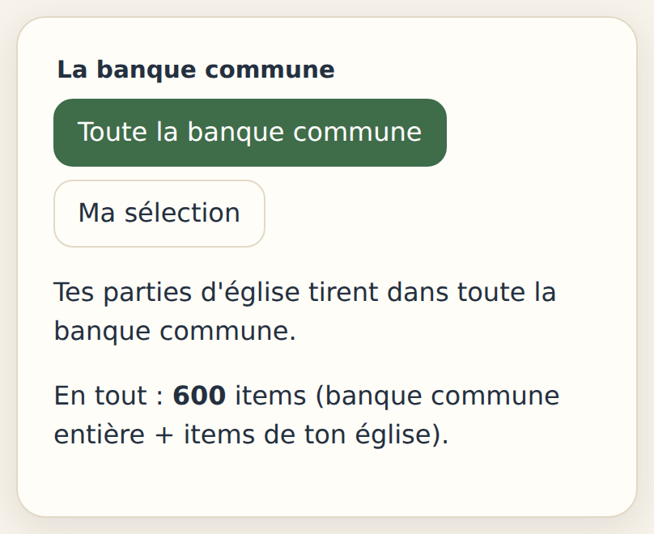
| Si tu veux… | Va… |
|---|---|
| Écrire des questions pour une prédication | Mon église → Les séries → l'épreuve → Créer la série |
| Cacher une série le temps de l'écrire | Laisse-la en brouillon |
| Faire de la place sans rien perdre | Archiver une série publiée |
| Confier l'écriture à quelqu'un | Mon église → Membres → Nommer co-responsable |
| Vérifier ce que voient tes membres | Ouvre l'épreuve : la pastille de ta série |
| Signaler un contenu | contact@biblehorizon.fr |
| Le reste du rôle de responsable | Le guide du responsable, dans Mon église |
Bible Horizon — biblehorizon.fr · contact@biblehorizon.fr
Gratuit, sans publicité, sans revente de données. Les captures de ce guide viennent de
l'application telle qu'elle est aujourd'hui ; si un écran a changé, c'est l'application qui a raison.